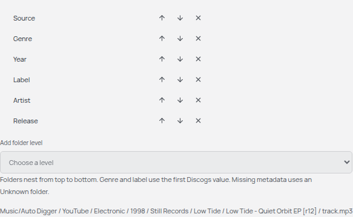
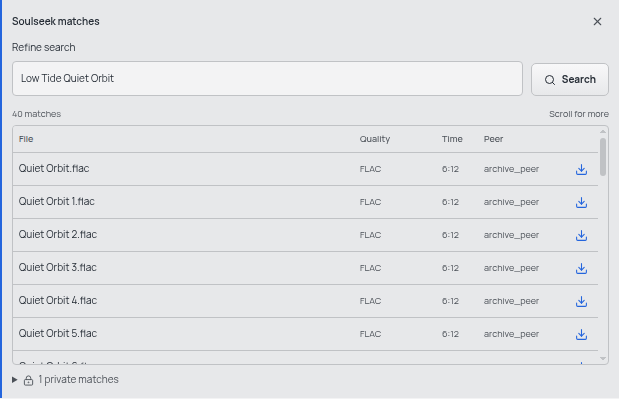

Setup / Soulseek audio
Soulseek setup
Find a track on Soulseek without leaving the digging desk.
slskd handles the Soulseek connection and transfers. Auto Digger searches its API and copies completed audio into your library. YouTube downloads remain available alongside it.
1. Prepare slskd
- Install slskd with Docker or follow its native installation guide. This integration was checked with slskd 0.26.2.
- Enter your Soulseek username and password in slskd's configuration. Its web-interface login is a separate account.
- Choose a music folder to share and let slskd index it. Keep completed downloads and incomplete transfers in separate writable folders.
-
Create a ReadWrite API key under
web.authentication.api_keys. Save it for Auto Digger; keep your Soulseek password in slskd. - Open the local slskd interface at http://127.0.0.1:5030 and confirm that Soulseek is connected.
Docker setup
This Linux example follows slskd's bind-mount setup. Install Docker with its Compose
plugin first, then create a working folder containing compose.yml and the
folders data, downloads and incomplete.
Save this as compose.yml. Replace /path/to/your/music with
your collection. Set user to your Linux user and group IDs, found with
id -u and id -g, and make the three writable folders
accessible to that user.
services:
slskd:
image: slskd/slskd:0.26.2
restart: unless-stopped
user: "1000:1000"
ports:
- "127.0.0.1:5030:5030/tcp"
- "50300:50300/tcp"
volumes:
- ./data:/app:rw
- ./downloads:/downloads:rw
- ./incomplete:/incomplete:rw
- /path/to/your/music:/music:roGenerate a random API key, then copy it into the configuration below:
docker run --rm slskd/slskd:0.26.2 ./slskd --generate-secret 32
Save this as data/slskd.yml, replacing every capitalised value. The web
username and password are for opening slskd's interface; the Soulseek credentials
connect to the music network.
soulseek:
username: "YOUR_SOULSEEK_USERNAME"
password: "YOUR_SOULSEEK_PASSWORD"
shares:
directories:
- /music
directories:
downloads: /downloads
incomplete: /incomplete
web:
authentication:
username: "YOUR_WEB_USERNAME"
password: "YOUR_WEB_PASSWORD"
api_keys:
auto_digger:
key: "YOUR_GENERATED_RANDOM_API_KEY"
role: ReadWriteStart slskd from your working folder:
docker compose up -d
Keep the web interface on localhost. Incoming Soulseek peers use TCP port
50300; allow or forward it through your firewall/router when needed. The
:ro music mount lets slskd share your collection without changing it.
For Windows, macOS or a different Docker layout, use the official Docker guide. Native installations use ordinary local folder paths instead of container paths.
Reference: slskd authentication and API keys.
2. Connect Auto Digger
Open Settings → Soulseek in Auto Digger and enter:
- slskd URL
http://127.0.0.1:5030for a local instance.- slskd API key
- The ReadWrite key from slskd. An administrator key is unnecessary.
- slskd completed-downloads folder
-
The full path to completed files on your computer. With the Docker
example, choose the
downloadsfolder inside your working folder, rather than the container path/downloads.
Choose Connect slskd. This confirms API access. Soulseek sign-in and sharing are managed separately in slskd.
Auto Digger remembers the API key using operating-system encryption and clears it from the field. Leave it blank when changing other connection details to keep the saved key.
A remote slskd URL must use HTTPS. Its completed files must still be accessible on this computer, for example through a mounted shared folder.
3. Organise downloads
Under Downloads in Settings, choose your Auto Digger destination and edit Folder layout. Use any of the six placeholders:
<source> <genre> <year>
<label> <artist> <release>
<source>/<artist>/<release>
Use / between folders, or combine values with ordinary text such as
<year> - <genre>. Leave the field empty to keep files together.
Choose Save folder layout when the preview looks right.

Genre and label use the first Discogs value; missing metadata gets an Unknown folder. Release folders include the pressing ID. Changes apply to future downloads, and existing files stay at their saved locations.
4. Find a track
- Open a record on the digging desk. Under Audio sources, choose Soulseek beside YouTube.
- Choose the Discogs track you want, then edit Refine search when needed. Punctuation becomes spaces, while the record's title stays unchanged.
- Compare the file, quality, duration and peer. The table scrolls, and Show more reveals further matches. Private matches are counted separately and cannot be downloaded.
- Choose a public match's download icon. Follow progress, cancel or retry in Downloads.

slskd finishes the transfer first. Auto Digger then copies the completed file into your chosen folder layout and adds it to the player. The slskd copy is retained.
MP3, FLAC, WAV, M4A, Ogg and Opus keep their original encoding. MP3 files receive best-effort Discogs tags; other formats retain their embedded tags. Auto Digger records Discogs metadata and the source in its library index.
Troubleshooting
- Connected to slskd, but searches do not work?
- Check that slskd is connected to Soulseek. Signing into its web interface alone does not connect the music account.
- Cannot connect Auto Digger?
- Check the URL and ReadWrite API key, and keep slskd running. If your desktop keyring is locked, unlock it and save again. Use Forget slskd connection to clear unreadable saved settings.
- A transfer stalls or a peer is unavailable?
- Try another public match or refine the query. Access to private files remains controlled by the peer.
- Completed audio cannot be found?
- Check the host download-folder mapping and read permissions. Auto Digger imports completed files, not files from the incomplete folder or the collection you share.